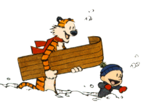
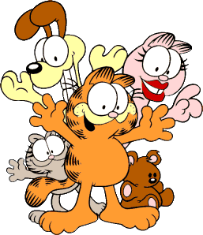

Dilbert is an American comic strip written and illustrated by Scott Adams, first published on April 16, 1989 It is known for its satirical office humor about a white-collar, micromanaged office with engineer Dilbert as the title character.
Calvin and Hobbes is a daily American comic strip created by cartoonist Bill Watterson that was syndicated from November 18, 1985, to  December 31, 1995. Commonly described as "the last great newspaper comic." [2][3] [4] Calvin and Hobbes has enjoyed enduring popularity, influence, and academic and even a philosophical interest.
Garfield is an American comic strip created by Jim Davis. Originally published locally as Jon in 1976 (later changed to Garfield in 1977), then  in nationwide syndication from 1978. It chronicles the life of the title character Garfield the cat, Odie the dog, and their owner Jon Arbuckle.